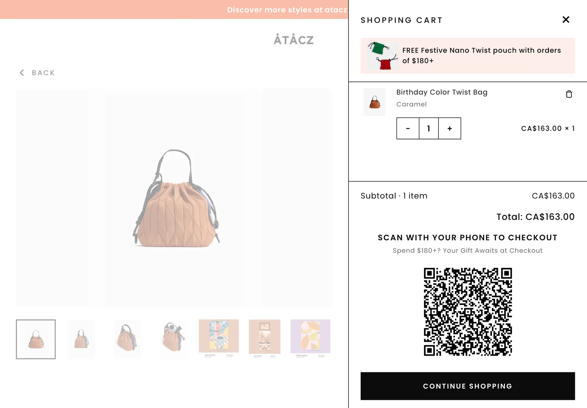

06 · Tri-City Pop-up
Birthday Twist Collection Pop-up
Three surfaces for one pop-up exhibition with the Vancouver artist Olivia Di Liberto: a landing page, an RSVP page for her live drawing event, and the iPad kiosk on the shop floor — all built on the live store.
Draft. The pop-up opened on 20 November 2026 and runs to 19 February 2027; the live drawing event is on 28 November. Results come after.
1 · The problem
[One-line problem — Han]
[Why a pop-up at Tri-City Pavilion, what the page had to do, the deadline — Han.]
2 · The constraints
The kiosk is someone else’s app. In the store, shoppers browse on an iPad running a third-party kiosk app, Store Check-in, build a cart there, and pay on their own phone through a QR code. The app renders one card per product. Its only design control is a custom CSS box, capped at 20,000 characters: no markup, no script.
The app owns the gestures. A fast sideways swipe already means back or home.
The event is small. Six 30-minute slots of six people each, booked through the store’s own pages.
3 · Decisions
The collection, hung like ornaments
Twelve colours, twelve months, twelve threads. The top of the page is the Birthday Color Twist Bag, one card per colour, January to December, each hung from the ceiling on its own thread. Card size stands for depth: nearer cards are larger and sit higher in the stack. The thread and the card sway together, each on its own period.
One click moves all of them. Click a card and every card is pulled up its thread, the one you clicked first; then they drop back one at a time, in random order. Under prefers-reduced-motion nothing moves.
The landing page’s first screen on desktop and phone at once, scaled down, rebuilt from the live section’s values: positions, sizes, sway periods, timing. One change for this page: on desktop the copy sits in the gap between the cards. Click any card, or the button.


The Art of The Twist
Where design, art, and community come together.
Two layouts, not one. The ornaments stay fixed while the page scrolls, and the next sections slide over them. Desktop and phone each get their own position table, because a single one either clipped cards at the edge or split a card from its thread.
[Why ornaments — Han.]
Booking slots without a booking app
The form is the store’s own customer form. Picking a slot adds a customer tag. A Shopify Flow re-counts every tagged customer on each new tag and writes the totals to a store-wide value (a shop metafield), which the page reads to show the spaces left.
Re-count, not add one. A missed run fixes itself on the next.
The cost, agreed up front: two people submitting at once can overbook a slot, and that is accepted.
Keeping the guest list in the store
The page it started from sent guests elsewhere. The event’s first page came from an external site builder. Its form had no address of its own: a script sent names and emails to a personal account outside the store. The privacy note said ATACZ collected them, and the marketing opt-in was never recorded where the store keeps consent, so there would be nothing to show under Canada’s anti-spam law. One slot already showed a booking.
So the form moved onto the store. It is Shopify’s own customer form: a guest becomes a customer with a tag, in the same list as every other customer. The privacy box is required but never sent. Marketing consent is a separate, optional box, and only a ticked box records it. The privacy policy link sits under the note.
What it left to do: I reported both problems to the owner before anything shipped. Bookings already taken on the old page had to be moved across by hand, and the old page taken down.
The same ornaments, on the shop-floor iPad
So twelve colours could not be twelve cards. The kiosk gives the Birthday Color Twist Bag one card. Instead, the twelve ornaments are drawn on twelve pseudo-elements of that one real card and its children. Each has its own thread length, width, colour photo, month and colour name, and sway period. Tapping anywhere on the scene opens the product, and the colour is picked there.
- Product list::before
- Card::before::after
- Product info::before::after
- Title::before::after
- Price::before
- Price text::before::after
- Description::before::after
Sized for the device. Thread length and card width are in vh, set for the iPad held landscape (1180×820).
Three tabs, three scenes. Birthday Twist, Straps and Pins each hang their own ornaments. Straps hangs two products, Utility Bind 2.0 on the left half and Bind Strap on the right, and a tap on either half opens that product. The drop and sway use the landing page’s values, so the page and the store move the same way.
The kiosk at the iPad’s size, 1180×820, scaled down. The three tab scenes are rebuilt from the kiosk’s own scene stylesheet, so the drop, the sway and the tab bar move as they do on the iPad; the text over them, the product page and the cart are captures from the app’s preview (18 November). Tap it as on the iPad: the tab bar, the scene, Back, Add to cart, the cart icon and its close; or pick a screen below.


Screen
Designing the rest of the kiosk from a CSS box
Past the 20,000-character cap. The three scenes did not fit. The app also accepts font stylesheet URLs, which it loads as ordinary <link> tags, so the scenes moved into a stylesheet hosted in Shopify Files, with no size limit. Every edit is uploaded under a new file name, so the iPad cannot change before a version is published.
Tabs you tap, not swipe. Because the app owns the swipe, the tab row became a navigation bar at the bottom centre. It rises first, and an underline grows under the open tab.
The store’s product page, inside the app. It takes the live theme’s type and button sizes. Colours are photo tiles instead of text pills, with a 2px outline on the chosen one. The app paints the selected option with a forced background colour; rather than fight it with !important, the tile redefines the variable that rule reads.
A cart you can read at a glance. The QR code shrank from 252 to 202px, so two and a half items show at once instead of one. A band under the cart title shows the gift-with-purchase pouch: a free Festive Nano Twist with orders of $180 or more.
4 · How it was built
The RSVP, end to end
A theme page cannot count customers. Liquid can show a customer’s own tags, but it cannot ask how many customers carry one. So the count has to be written somewhere the page can read, and the chain below is what writes it.
Form
The store’s customer form
Each slot is a radio button whose value is two tags: one for the event, one for the slot.
Customer
rsvp-tricityThe eventrsvp-tricity-1300The slot
Flow
On every new tag, fetch all event guests and count by slot
Get customer data → Run code → Update shop metafield
Page
custom.event_rsvp_countsShop metafield, JSON
Six minus the count is the “spaces left” on each slot.
The default would have dropped the eleventh guest. Flow’s customer query returns ten customers unless told otherwise. With 36 seats, it was raised to 100.
The metafield had to exist first. Flow’s “Update shop metafield” only lists metafields that already have a definition, so the shop-level definition was created before the workflow.
Tested on the live store, not a mock. A tag added by hand reached the count in about three seconds, and the live page showed “5 spaces left”. A form sent again with the same email added the second slot’s tag to the existing customer without touching their name, tags or subscription; both counts updated two seconds later.
Two limits, known and accepted. Tags have no order, so one email can hold more than one slot; the list is tidied by hand. And a removed tag is not a new tag, so cancellations need their own re-count workflow, one without the “has the tag” condition.
The page kept changing while I built it. The owner edited the same template in the live editor, adding the hero video and the artist’s photo. Before every push I pulled the live copy and compared; where it differed, the live copy won and came back into the repository.
The kiosk, version by version
Working blind, then not. The app’s settings live in a cross-origin frame that no script can read. Opening the kiosk preview on its own, outside that frame, made its page readable and its custom CSS swappable without saving. Loading that preview into a 1180×820 frame on the same origin gave the iPad’s exact size, which a resized browser window never matched.
| Version | What changed | What forced it |
|---|---|---|
| 2823 → 2827 16 Oct | The app’s default look rewritten from the live theme’s measured styles: square corners, no shadows, the store’s type sizes | Published once to the global settings, the iPad did not change: the store’s own settings override them |
| 2830 16 Oct | Three columns when upright; the cart drawer a single column at every size | The app’s own rule turned the cart into a 700px two-column grid inside a 480px drawer, and the QR code fell off the edge |
| 2832 16 Oct | Larger type, Add to cart pinned to the bottom, 48px quantity buttons | The live site’s sizes are for sitting and scrolling; a kiosk is read standing, at arm’s length |
| 2839 16 Oct | Only the chosen colour’s photos; a larger QR code; a build step that strips comments | The commented source reached 25,524 characters against the 20,000 cap |
| 3010 13 Nov | Cart rows never shorter than one item; the drawer scrolls on short screens | On the device, Chrome’s address bar left 680–740px of height, not 820, and the cart rows were cut |
| 3041 16 Nov | The Birthday-only kiosk: the announcement bar and tab row gone, the ornament scene full screen | The owner narrowed the kiosk to the collection on show |
| 3060 17 Nov | Scenes moved to a hosted stylesheet; product page on the theme’s values; colour photo tiles | No room left under the cap; a code review found the ornaments ignored reduced motion |
| 3114 18 Nov | The product list stays hidden until the scene stylesheet arrives, with a three-second fallback | The app removes and re-adds that stylesheet on every settings refresh; the owner’s iPad showed a bare grid with raw alt text |
What CSS could not fix, reported instead. Items sold out online could still go in the kiosk cart: the app asks for stock without naming a country, so the store’s shops count too. And with the screensaver off, the “Are you still there?” dialog resets the kiosk on any touch, including Continue. I traced both to the app’s own code and wrote them up for its developer; the second is avoided by keeping the screensaver on.
The gift needed its own small app. A discount code shows at checkout and can be reused online. Instead, a checkout block adds the gift and a discount function makes it free, both only when the cart carries the kiosk’s location and the subtotal, gift excluded, is $180 or more. With no code, there is nothing to leak.
5 · Outcome
Pending. The event is on 28 November 2026.
6 · What’s next
[Han.]